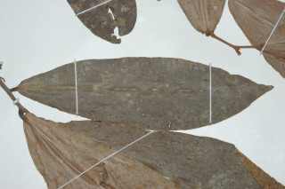
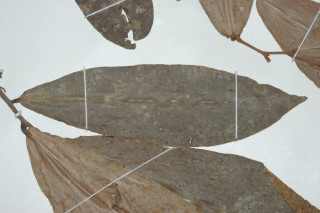

Shrubs or Small trees, ca. 5 m tall.
ಪೊದೆಗಳು ಅಥವಾ ಸಣ್ಣ ಮರಗಳು ಅಂದಾಜು 5ಮೀ ಎತ್ತರದವರಗೂ ಬೆಳೆಯುತ್ತವೆ.
ഏതാണ്ട് 5 മീറ്റര് വരെ ഉയരമുള്ള കുറ്റിച്ചെടികളായോ ചെറുമരങ്ങളായോ വളരുന്നു.
குத்துச் செடி அல்லது சிறிய மரம், சராசரியாக 5 மீ. உயரம் வரை வளரக்கூடியது.
Branchlets pubescent.
ಕಿರುಕೊಂಬೆಗಳು ಮೃದು ತುಪ್ಪಳ ಸಹಿತವಾಗಿರುತ್ತವೆ.
രോമിലമായ ഉപശാഖകള്
சிறிய நுனிக்கிளைகள் மென்சிறு உரோமங்களுடையது.
Leaves simple, alternate, distichous; petiole to 0.3 cm long, nearly terete, pubescent, stout; lamina 10-20 x 3-6 cm, oblanceolate, apex caudate - acuminate, base nearly cordate, margin undulate, minutely pubescent or subglabrous beneath, glabrous above; secondary_nerves 8-10 pairs; tertiary_nerves slender, weakly percurrent.
ಎಲೆಗಳು ಸರಳ, ಪರ್ಯಾಯ ಜೋಡನಾ ವ್ಯವಸ್ಥೆಯಲ್ಲಿದ್ದು ಕಾಂಡದ ಎರಡೂ ಕಡೆ ಎದುರು ಬದರಿನ ಸಾಲಿನಲ್ಲಿರುವ ಜೋಡಿಸಲ್ಪಟ್ಟಿರುತ್ತವೆ. ಎಲೆ ತೊಟ್ಟು 3ಸೆಂ.ಮೀ. ನವರೆಗಿರುತ್ತವೆ. ಬಹುಮಟ್ಟಿಗೆ ಗುಂಡಾಕಾದರದಲ್ಲಿದ್ದು, ಧೃಡ ಹಾಗೂ ಮೃದುತುಪ್ಪಳವನ್ನು ಹೊಂದಿರುತ್ತದೆ; ಎಲೆಪತ್ರ 10-20 × 3-6ಸೆಂ.ಮೀ, ಬುಗುರಿ – ಭರ್ಜಿ ಆಕಾರ ಹೊಂದಿದ್ದು ಬಾಲರೂಪಿ – ಕ್ರಮೇಣ ಚೂಪಾಗುವ ತುದಿ, ಬಹುಮಟ್ಟಿಗೆ ಹೃದಯಾಕಾರದ ಬುಡ, ಅಲೆಯಾಕಾರದ ಅಂಚು ಹೊಂದಿರುತ್ತವೆ. ಹಾಗೂ ಸೂಕ್ಷ್ಮವಾಗಿ ಮೃದು ತುಪ್ಪಳ ಸಹಿತ ಅಥವಾ ಉಪರೋಮರಹಿತವಾದ ತಳಭಾಗ ಮತ್ತು ರೋಮರಹಿತವಾದ ಮೇಲ್ಭಾಗವನ್ನು ಪಡೆದಿರುತ್ತವೆ. ಎರದನೇ ದರ್ಜೆಯ ನಾಳಗಳು 8 ರಿಂದ 10 ಜೋಡಿಗಳು ; ತೃತೀಯ ದರ್ಜೆಯ ನಾಳಗಳು ತೆಳ್ಳಗಿದ್ದು, ದುರ್ಬಲವಾಗಿ ಅಕ್ಷಾದಿಂಡಿಗೆ ಸೇರುವಂತಹವು.
ലഘുവായ ഇലകള്, ഏകാന്തരക്രമത്തില്, തണ്ടിന്റെ രുഭാഗത്ത് മാത്രമായടുക്കിയിരിക്കുന്നു; ഏതാണ്ട് ഉരുണ്ടതും, ദൃഢമായതും, രോമിലവുമായ ഇലഞെട്ടിന് 0.7 സെ.മീ. വരെ നീളം; പത്രഫലകത്തിന് 10 മുതല് 20 സെ.മീ. വരെ നീളവും 3 മുതല് 6 സെ.മീ. വരെ വീതിയും, അപകുന്താകൃതിയും, വാലോടുകൂടിയ പത്രാഗ്രവും, ഏതാ് ഹൃദയാകാരത്തിലുള്ള പത്രാധാരവും, തരംഗിതമായ അരികുകളും, നന്നേ ചെറുതായി രോമിലമായതോ ഉപ അരോമിലമായതോ ആയ കീഴ്ഭാഗവും, അരോമിലമായ മേല്ഭാഗവും ആണ്; ദ്വിതീയ ഞരമ്പുകള് 8 മുതല് 10 വരെ ജോഡികള്; ത്രിതീയ ഞരമ്പുകള് നേര്ത്തതും ലഘുവായി പെര്കറന്റും ആണ്.
இலைகள் தனித்தவை, மாற்றுஅடுக்கமானவை, இருநெடுக்கு வரிசையிலையடுக்கம் (டைஸ்டிக்கஸ்); இலைக்காம்பு 0.3 செ.மீ. நீளமானது, உருண்டையானது, மென்சிறு உரோமங்களுடையது, தடித்தது; இலை அலகு 10-20 X 3.6 செ.மீ., தலைகீழ் ஈட்டி வடிவம், அலகின் நுனி வால்-அதிக்கூரியது, அலகின் தளம் இதய வடிவானது (கார்டேட்), அலகின் விளிம்பு அலைப்போன்றது, மென்சிறு உரோமங்களுடையது அல்லது கீழ்பரப்பு சிறிது உரோமங்களுடையது, மேற்பரப்பு உரோமங்களற்றது; இரண்டாம் நிலை நரம்புகள் 8-10 ஜோடிகள்; மூன்றாம் நிலை நரம்புகள் மெலிதானது, அகன்ற பெர்க்கரண்ட்.
Flowers solitary or in fascicles, leaf opposed or extra-axillary, creamy white; pedicels 1 cm long, tomentose.
ಹೂಗಳು ಕೆನೆಮಿಶ್ರಿತ ಶ್ವೇತ ವರ್ಣದವು ಒಂಟಿಯಾಗಿ ಅಥವಾ ಗುಚ್ಛಗಳಲ್ಲಿದ್ದು ಎಲೆಗಳಿಗೆ ಅಭಿಮುಖವಾಗಿ ಅಥವಾ ಅಗ್ರ ಅಕ್ಷಾಕಂಕುಳಿನಲ್ಲಿರುತ್ತವೆ; ಹೂತೊಟ್ಟುಗಳು 1ಸೆಂ.ಮೀ. ಉದ್ದವಿದ್ದು, ದಟ್ಟ ಮೃದು ತುಪ್ಪಳ ಸಹಿತವಾಗಿರುತ್ತವೆ.
ഇലകള്ക്കെതിരായോ അപകക്ഷീയമായോ ക്രീം നിറത്തിലുള്ള പൂക്കള് ഒറ്റക്കോ കൂട്ടമായോ ഉണ്ടാകുന്നു; കനത്ത രോമാവൃതമായ പൂഞെട്ടുകള്ക്ക് 1 സെ.മീ. നീളമുണ്ടാകും.
மலர்கள் தனியானது அல்லது கூட்டமாக காணப்படுபவை, இலைக்கு எதிரானது அல்லது அதற்கு சற்று மேல் அமைந்தது, வெள்ளை நிறமானது; மலர்காம்பு 1 செ.மீ. நீளமானது, அடர்த்தியான மென்சிறு உரோமங்களுடையது.
Clustered 1-2 seeded berries, red.
ಸಾಮೂಹಿಕವಾಗಿರುವ ಒಂದರಿಂದ ಎರಡು ಬೀಜಗಳನ್ನೊಳಗೊಂಡ ಬೆರ್ರಿಗಳು ಕೆಂಪು ಬಣ್ಣ ಹೊಂದಿರುತ್ತವೆ.
ഒന്നോ രാേ വിത്തോടുകൂടിയ, ചുവന്ന നിറത്തിലുള്ള സരസഫലങ്ങള് കൂട്ടമായുണ്ടാകുന്നു.
கொத்தான 1-2 விதையுள்ள முழுச்சதைகனி (பெர்ரி), சிவப்பு நிறம்
 
